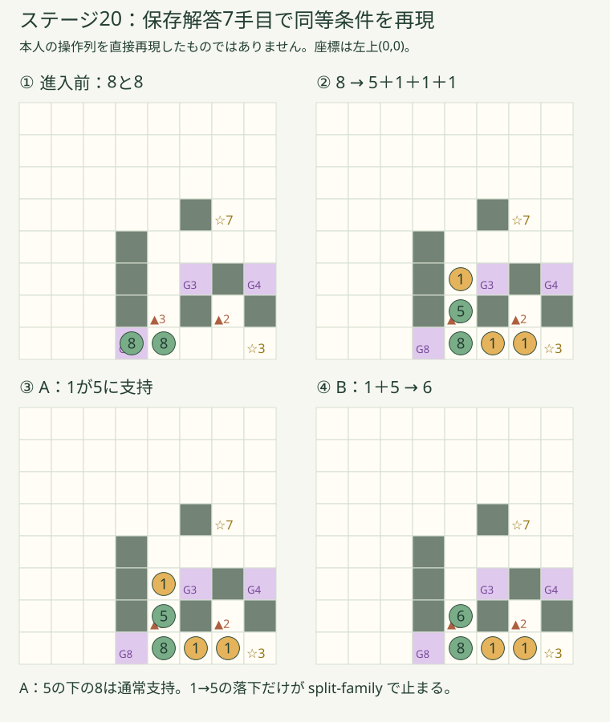
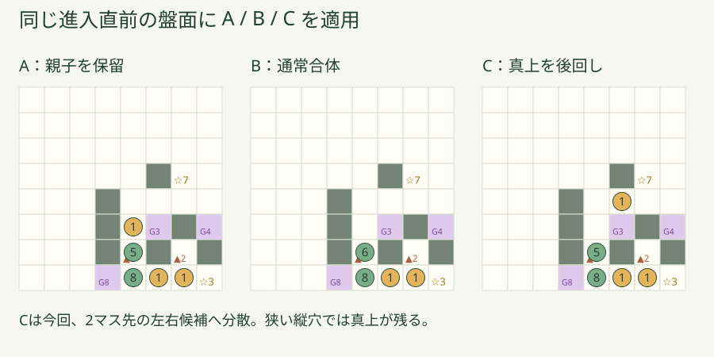
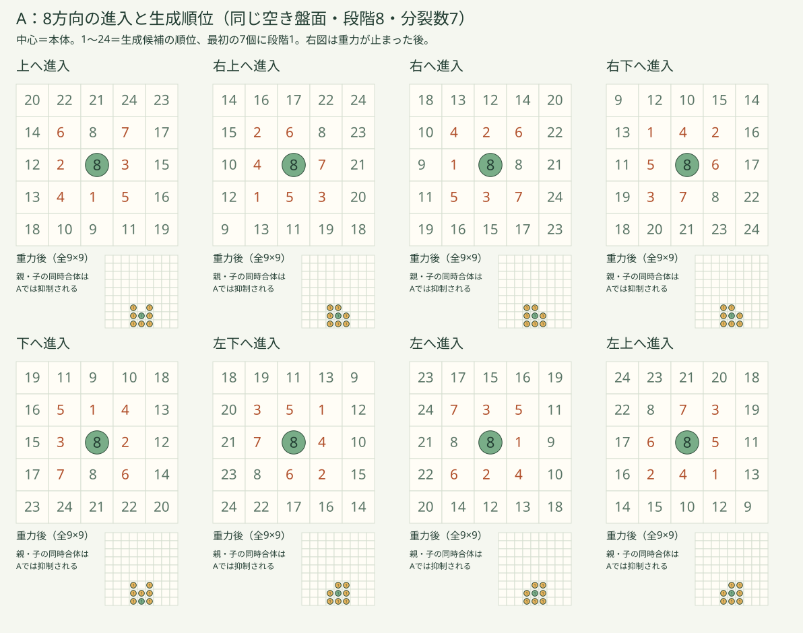

01 / COMPARE
同じ一手を、3つのルールで。
数字の仲間を選び、矢印を押すと重力後の結果を比較できます。「この結果から続ける」までは元の盤面は変わりません。操作・進行は保存しません。
どちらへ動かす？
1マス分の一手です。盤面の数字を押すと操作する仲間を変えられます。
Bの循環対策を切り分ける追加実験です。正式採用ではありません。
● 仲間・数字＝段階■ 岩G 数字＝魔法ゲート▲ 数字＝トゲの分裂数☆ 数字＝出口
処理の途中を見る：分裂 → 落下判定 → 安定
02 / FINDING
上の1は、落ちようとして止められていました。
8が右上へトゲに入り、5と3体の1に分裂。親と同じ分裂グループの1だけが、5への落下合体を拒否されます。

同等条件の再現です。本人の実操作列・今回の元スクリーンショットは未提供。保存解答7手目で同じ条件を実エンジンに作りました。下の5は8に、上の1は親子合体の一時抑制で5に支えられています。

Cは今回の縦積みを避けます。ただし左右のない縦穴では、Cでも上の1が残ります。配置改善だけで例外そのものは消えません。
03 / PLACEMENT
ランダムではない。
でも、見ただけでは読みづらい。
Aは進行方向の逆→左右90度→後ろ斜め→前斜め→前の順で、まず隣、次に空きマスを経由した2歩先を調べます。岩・ゲート・トゲ・出口・仲間のいるマスには子を置きません。2マス先へ直接飛び越せるわけではありません。

Cの比較案は進入方向によらず、左右を優先。親の真上は2歩先の横方向の候補よりも後。支持の有無による追加の順位分岐は入れていません。
04 / IMPACT
配置を変えると、解き方も変わる。
全10面で各方式のクリア解答を確認しました。下の数字は確認できた解答の手数で、15〜20面の大半は最短手数ではありません。長い解答が見つかったことだけでは、難化を断定できません。
| 面 | A | B | C | 旧解答 B / C |
|---|
第一推奨：通常合体＋各トゲは一手に一度だけ分裂。
物理ルールを統一し、循環はトゲ側の一つのルールで止める案です。追加実験では全10面の解答と循環停止を確認。ただし分裂がすぐ戻る場面・既存の解法変化があるため、今回の結果を確認してから正式採用を判断します。
Cは配置の読みやすさを改善する案ですが、一時的に親子だけ合体しない例外が残ります。VERSION 9はこの比較ページとは独立したままです。